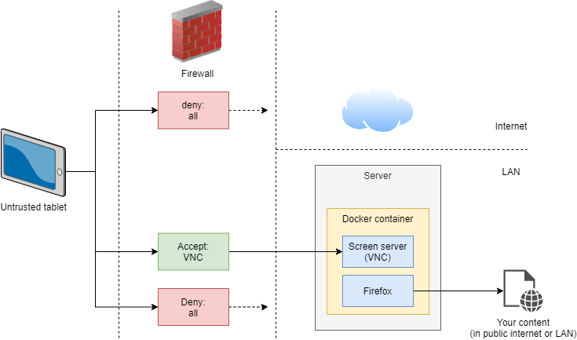
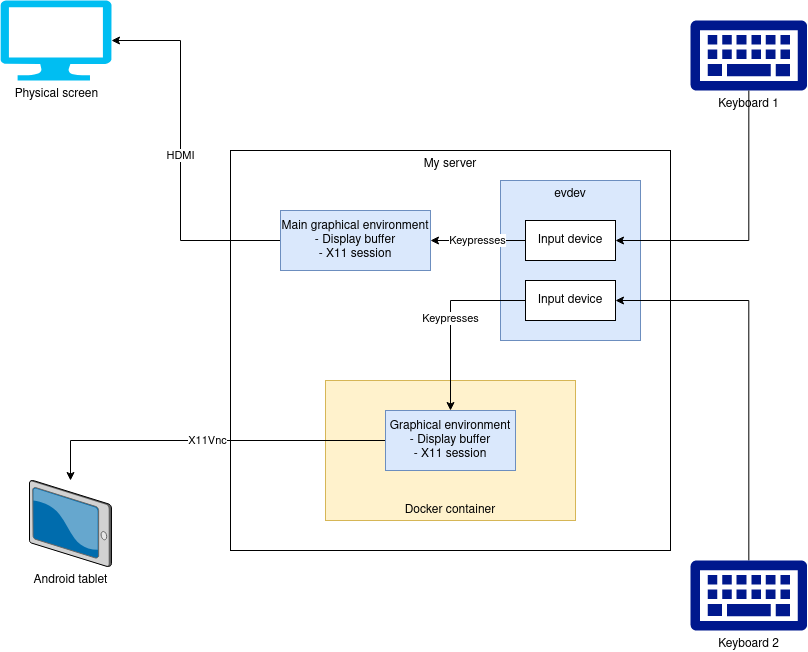

Attach a keyboard to a Docker container
I wanted to connect a keyboard-mouse-combo to a virtual remote desktop running inside a Docker container.
My use case
I have a wall-mounted Android tablet displaying always-on content (“info screen”) in my home:

For security reasons the tablet can’t reach the internet and actually has a VNC viewer that displays a virtual framebuffer from inside a Docker container on my server. Here’s the conceptual overview:

I wanted to attach a keyboard to the “tablet”. The thing is, the tablet’s only USB port holds the charger cable. I could maybe rig up a USB hub, but that’s not pretty. I had an idea: what if I could connect an extra keyboard to my server computer that actually hosts the virtual screen, and logically connect the keyboard to that graphical environment?
The problem
The thing is, the way things usually work is that there’s only one graphical environment inside an OS and all keyboards and mice (= input devices) are automatically “digitally wired up” to that one. Here’s what I mean:
evdev (“Event device”) is Linux’s subsystem for representing
input devices. The main graphical environment (X.org) selfishly reads all evdev input devices for
their input. I can’t simply “map evdev” inside the container - even if that worked, both graphical
environments would receive all input from both keyboards.
What I wanted to do
This didn’t seem to be easily possible at first: (it’s a rare use case, I know)

In my particular case I’m using screen-server for the container and here’s the main components inside that make up its graphical environment:
- Xvfb (“X virtual framebuffer”), which is an X11 server process that represents a virtual (= not connected to a physical monitor) screen.
- x11vnc (X11 VNC) is like remote desktop for any X11 environment, whether the screen is virtual or also physically connected.
I kept searching if there’s any config option where either Xvfb or x11vnc could grab only a specified input device. I didn’t seem to find any. There’s probably good reasons:
- x11vnc is not designed for local input anyway (the input usually comes from remote computers).
- Xvfb usual use cases are total automation (like running headless browsers) or like in this case, just a virtual screen whose input comes from outside (like x11vnc in this case).
The solution
evdev has low-level support for our use case
Turns out evdev has this concept of “grabbing”, which means that you can open a handle to a
keyboard/mouse(/combination) and grab it for exclusive access. The technical option name is
EVIOCGRAB (I can’t seem to find documentation for it).
This means that only you are receiving the input, and everyone else reading that same keyboard will receive nothing. Once you close the keyboard (or your process crashes), the OS un-grabs it and thus cleans up it for you. Very nice :)
Getting comfortable with evdev
evdev represents each input device as a file that regular programs can read from. I can list input
devices simply by listing files in a directory:
$ ls /dev/input/by-id
usb-Logitech_USB_Receiver-if01-event-kbd
usb-Logitech_USB_Receiver-if01-event-mouse
Now let’s test reading from a file (you probably need $ sudo prefix):
$ cat /dev/input/by-id/usb-Logitech_USB_Receiver-if01-event-kbd
(now each time you press a key some garbage shows up)
Reading from the input device in grabbed mode
Let’s take some (Go-flavoured) pseudocode. You can open the device just like a regular file. The magic
is adding the EVIOCGRAB after you’ve opened the file. It’s usually issued with a
function named IOCTL (“I/O control”).
keyboard, err := os.Open("/dev/input/by-id/usb-Logitech_USB_Receiver-if01-event-kbd")
if err != nil {
panic(err)
}
// 1 means grab, 0 means un-grab
if err := unix.IoctlSetInt(keyboard.Fd(), EVIOCGRAB, 1); err != nil {
panic(err)
}
If you’re interested, here’s a real-world example.
I’m not sure if there exists a universal solution
Universal solution would have to be done at X11 server level because that’s the one who’s reading the input that gets delivered to the GUI applications. It’d have to be done in one of these ways:
- Tell each server which event devices they’d listen to (so they don’t have overlap) OR
- Have one server listen to all input (= default config), but the other server listen to only a subset, and in grabbed mode
Grabbing specific input devices is implemented for X.org - there’s evdev support and a GrabDevice option, but it doesn’t seem to be implemented for Xvfb. They’re both X11 servers, but different implementations (for different use cases). Summarized:
| Product | Protocol | Use case | Supports input devices | Supports grabbing |
|---|---|---|---|---|
| X.org | X11 | Main graphical environment | yes | yes |
| Xvfb | X11 | Virtualized display | no | no |
Input (and grabbing) doesn’t seem to be implemented in Xvfb:
- StackOverflow question
- Web search for “xvfb keyboard input” yields nothing of interest
- Other people seem to be going the same route
But since I was using a highly specialized environment (screen-server), I was ok with adding specific code to do this input device grabbing (and delivering) for my project.
So the rest of this article discusses a DIY-code solution.
Using with screen-server
The user has to map the keyboard inside the container with $ docker run argument
--device /dev/input/by-id/usb-Logitech_USB_Receiver-if01-event-kbd. One could also bind the whole
/dev/input device tree (= all input devices), but since those can be used to keylog, for
security-wise it’s best to only map the required devices.
The code I linked to earlier is only receiving the input events. I had to also code how to react
to those as well. I wanted to just “pipe” them inside the X11 server (in my case, Xvfb). Turns out
keyboard/mouse handling in X11 is quite complicated, so I used X11’s
XTEST extension to pipe the input,
because it made everything simpler (I didn’t have to track which window is active to send input to
correct window etc.). I found out about XTEST by reading
xdotool source code (a tool for sending “fake input”).
The evdev-to-X11-pipe code is here. It’s not (yet) pretty, but it works.
You’ll have to read documentation for screen-server about how this is configured (I’ll not post it here in case it gets outdated), but there’s config option in screen-server to specify which input device to map inside which virtual screen (the software supports multiple screens). It works quite well.
Closing thoughts, recap
To recap, we just “mapped” a physical keyboard inside a virtual GUI environment - but we had to write DIY code for it. As far as I’m aware there isn’t an off-the-shelf way that works with Xvfb.
Linux has its downsides (you have lots to configure and to understand), but it really goes to show you that there’s a facility for many niche needs. Contrast that to Windows, I couldn’t imagine Windows enabling me to have a container with a virtual display and a minimal GUI environment and a specific keyboard inside of it. Sure, you maybe could cobble up something similar, but you really can’t control how all of it’s composed and Microsoft gets to decide when the individual components are removed / stop working.
Linux is pretty rad.

Thanks for reading! 😍
If you like my writing, consider following me on Twitter.
Stay updated on my blog posts & projects - sign up for
my newsletter. 🚀
No spam, unsubscribe any time.
RSS also available.